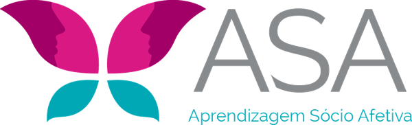

Use seu e-mail e senha para abrir o caderno e os pacientes da sua conta.
Este caderno apoia a terapia e não a substitui. © Priscila Tenenbaum · Espaço ASA
Cada paciente tem o seu próprio caderno. Use apelido ou iniciais. Escolha um para abrir.